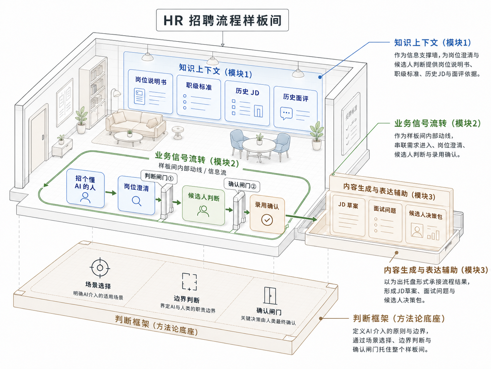
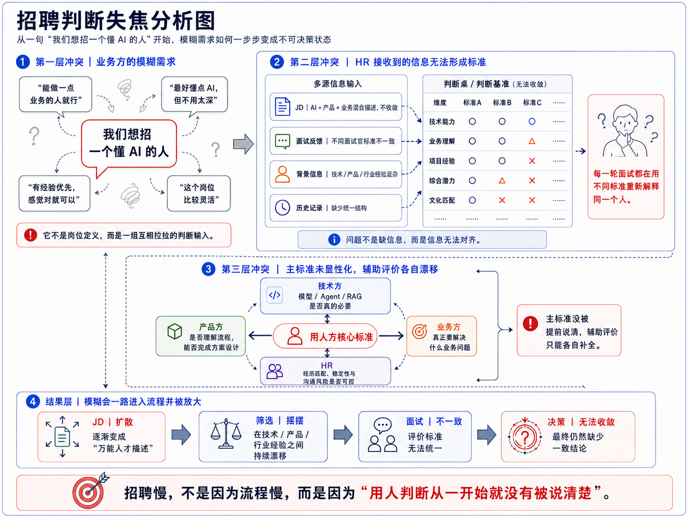
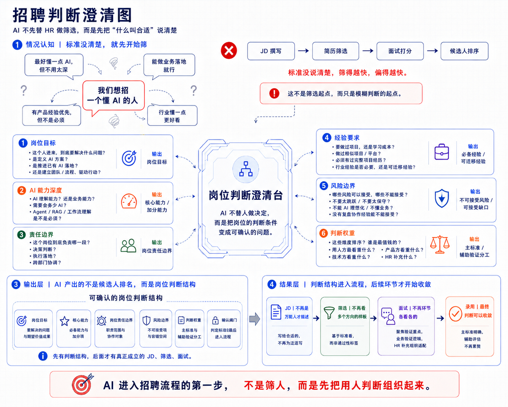
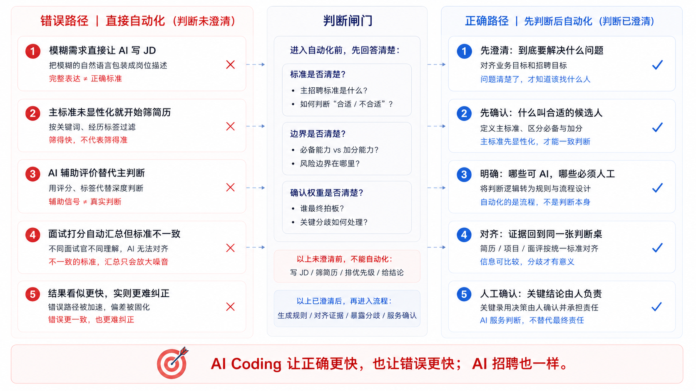
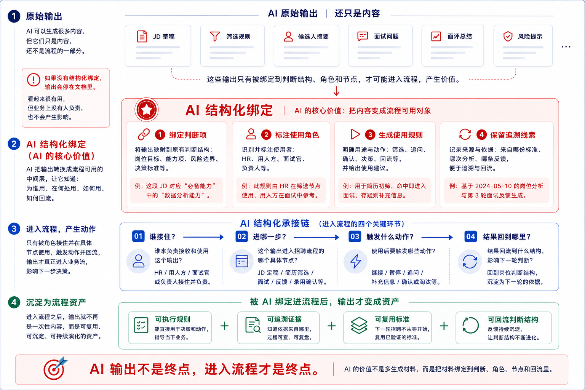
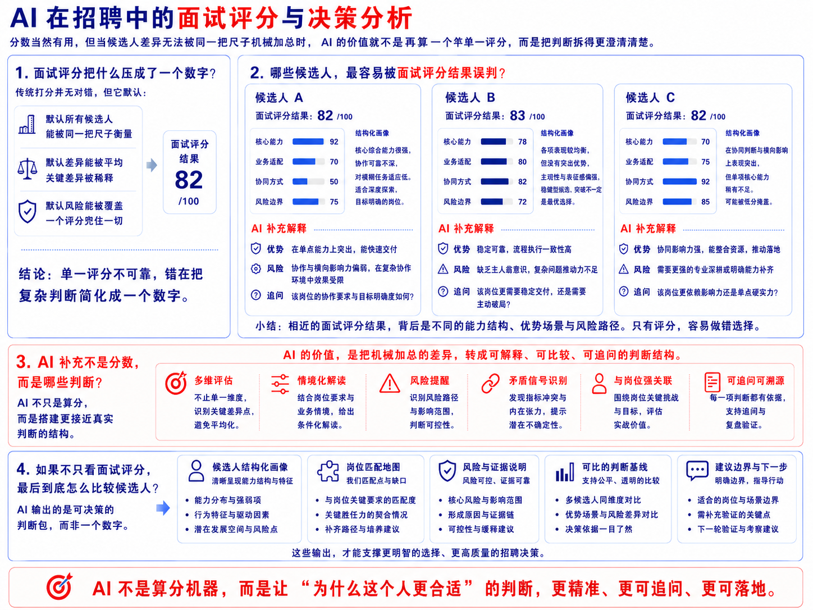
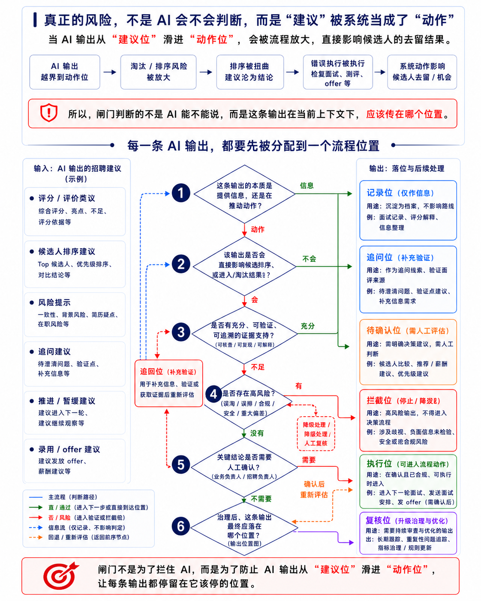

招聘与配置
判断问题：这个人适不适合？
AI 样板间
从“招个懂 AI 的人”开始
样板间构建：
01｜项目1：信息承重墙（可信上下文｜输入层）JD / 职级 / 面评 / 历史记录→ 招聘判断的信息基础
02｜项目2：决策动线（业务信号流转｜流程层）需求 → 澄清 → 筛选 → 面试 → 决策→ 招聘流程中的决策流转路径
03｜项目3：决策装配单元（结构化输出｜输出层）JD / 面试题 / 候选包→ 结构化招聘决策结果
04｜项目4：判断闸门（方法论底座｜控制层）场景 / 边界 / 闸门→ AI 在招聘流程中的介入控制规则

01 场景挖掘
HR 不是一条招聘流程，而是一组围绕“人和组织”的复杂判断链路。招聘、绩效、晋升、培训、组织诊断都可能被 AI 辅助，但起点不应该是“哪里能加 AI”。这一屏先做一次场景挖掘：从 HR 全域业务里拆出候选判断场景，再用判断模糊度、多角色分歧、信息分散度、流程放大效应、确认闸门和 AI 适配度做比较，选出第一条样板线——招聘判断。
招聘线被选中，不是因为它最容易做，而是因为它最能检验 AI 是否真正进入业务判断。
HR 的核心不是事务清单，而是一组持续发生的人与组织判断。
从 HR 全域业务中抽取代表性候选场景，用同一套判断维度比较：哪里标准更模糊、角色分歧更多、信息更分散、流程偏差更容易被放大，也更适合由 AI 做澄清、组织和对齐。
| 候选场景 | 判断模糊度标准是否容易说不清 | 多角色分歧是否容易各看各的 | 信息分散度资料、反馈、记录是否分散 | 流程放大效应前一步是否影响后续 | 确认闸门强度是否必须由人确认责任 | AI 边界清晰度适合澄清、组织、对齐 | 样板完整度能否展示澄清、规则、证据、确认 | 结论 |
|---|---|---|---|---|---|---|---|---|
| 招聘与配置 优先样板线 | 高 | 高 | 高 | 高 | 高 | 高 | 高 | 优先样板线 |
| 绩效管理 | 中 | 中 | 高 | 中 | 高 | 中 | 中 | 可迁移，但反馈周期更长 |
| 晋升 / 人才盘点 | 高 | 高 | 中 | 中 | 高 | 中 | 中 | 高价值，但组织敏感度更高 |
| 培训发展 | 中 | 中 | 中 | 中 | 中 | 中 | 低 | 适合后续扩展 |
| 组织诊断 | 高 | 高 | 高 | 中 | 高 | 中 | 中 | 复杂度高，但切口不如招聘清晰 |
| 员工关系 | 高 | 中 | 中 | 中 | 高 | 低 | 低 | 高风险，不适合作为第一条样板线 |
不是哪里能用 AI，就先做哪里；而是先找“判断最模糊、分歧最多、信息最散、又最值得被组织起来”的场景。
判断入口最常模糊
一句“我们想招个懂 AI 的人”，就足以启动流程，但远远不构成标准。
多角色参与最明显
用人方、HR、技术、产品、业务都会参与解释“什么叫合适”。
信息输入最分散
JD、简历、作品集、面评、历史记录、用人偏好都会进入同一张判断桌。
流程放大效应最强
岗位定义一旦模糊，后面的 JD、筛选、面试、录用会一路漂移。
AI 介入边界最清楚
AI 可以帮助澄清、组织、对齐、生成执行材料，但不能替人录用。
最适合作为样板动线
既常见、又复杂、又能完整展示 AI 如何进入真实业务判断。
招聘不是 HR 里唯一适合 AI 介入的地方，而是最能检验 AI 是否真正进入业务判断的第一条样板线。
先选对场景，后面的判断澄清、规则生成、证据对齐和确认闸门才有意义。
02 判断失焦
一句看似明确的需求进入招聘流程后，不会自动变成岗位标准。业务、技术、产品、HR 会各自翻译它，也会各自拉偏它。
这张图看的不是流程本身，而是判断如何失焦：信息并不少，但在筛选和面试前，还没有被组织成 HR 与业务方都能共同确认的判断结构。

所以，AI 在这里首先要接住的不是“筛选动作”，而是筛选之前的判断澄清：把模糊说法、分散反馈和漂移的辅助评价，变成 HR 与用人方都能确认的判断结构。
03 判断澄清
一句“招个懂 AI 的人”还停在口头经验里时，最危险的不是没人投简历，而是团队已经开始往下筛。JD、筛选、面试会把还没说清的标准一路带偏。
所以这里先把动作停在筛选之前：先追问用人方到底要解决什么问题，哪些能力必须具备，哪些评价只是辅助验证。
在主标准没有显性化之前，筛得越快，偏得越快；先把“什么叫合适”说清楚，后面的 JD、筛选、面试和录用才会开始收敛。

有了岗位判断结构，下一步才是把它转成可执行的 JD 与筛选规则。
04 错误自动化
上一屏把“什么叫合适”放回判断桌上，这一屏回答的是：为什么这一步不能跳过。在主标准没有澄清前，AI 写 JD、筛简历、排候选人，看起来是在提效，实际上是在把早期偏差更快复制到后续流程里；流程越自动化，错误越一致，也越难纠正。
自动化本身不是问题，自动化一个还没被说清楚的判断，才是问题。

接住判断闸门之后，AI 才能进入证据对齐、分歧定位和人工确认。
05 进入流程
上一屏说明了：判断没有澄清前，不要急着自动化。到了这一屏，问题变成：AI 生成的 JD、筛选规则、候选人摘要和风险提示，怎样才不只是停在文档里的内容？只有当它们被绑定到判断结构、使用角色、流程节点和回流机制里，才会真正被业务接住。
AI 生成了什么，不等于业务真的用了什么。

只有当输出被角色接住、在节点使用、影响下一步动作并形成回流，它才从内容变成流程资产。
06 分数误判
评分和权重加总本身不是问题，它能帮助团队快速排序，也能提供基础可比性。真正的问题是：当候选人的差异无法被同一把尺子机械加总时，一个清楚的面试评分反而可能掩盖主标准、证据、风险和适配边界。AI 要做的，是让这些被分数压平的判断重新变得可解释、可比较、可追问。
分数当然有用，但当候选人差异无法被同一把尺子机械加总时，AI 的价值就不是再算一个总分，而是把判断拆得更清楚。

当 AI 把面试评分拆成主标准、证据、风险和追问点时，候选人比较才从“谁分高”变成“谁更值得推进，为什么值得推进”。
07 AI 治理
到这一屏，问题已经不是 AI 能不能参与招聘判断，而是它参与之后，这些输出该怎么进入流程。AI 可以解释评分、比较候选人、提示风险、生成追问，也可能给出排序、推进、暂缓、淘汰或 offer。产品真正要设计的，不只是“AI 能出什么”，而是每一条输出在进入流程前，要先判断它是信息还是动作，有没有证据、是否放大风险、谁来确认，以及最终应该停在哪个位置。

当 AI 输出先被放到记录位、追问位、待确认位、拦截位、执行位或复核位，AI 才不是直接替招聘流程做决定，而是以可控、可追溯、可复盘的方式参与招聘判断。